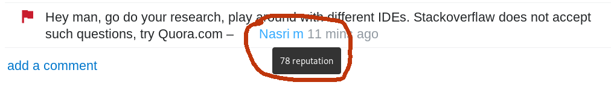

|
|
TL;DR A collection of strategies and approaches (almost) all learned the hard way. They range from the
good to the evil, intended to get the unsuspecting going and getting along on the rugged terrain of
the Stack Overflow ("SO") site and its diverse population.
This isn't
a moralistic or political endevour, it is about navigating circumstances that you otherwise can't
change (right now -
later
may be a different thing). You'll encounter enough morality wrecking havoc on SO. If you think it is
spineless and opportunistic: that's intentional.
"You're a
repwhore!"
"You bet I am."
public enum SosApproach {
GOOD, LEGITIMATE, QUESTIONABLE, EVIL
}
May the tips guide your journey, just as they led me in the barren and hostile desert of Java Q/A
from the dark abyss of insignificance (and the ultimate minimum of privileges on stack overflow) to
the high ridges of fame, glazing in the sun of admiration beyond
1K reputation within
about 2
months. You should google Jon Skeet now.
put on hold as off-topic by Qwertz, rolansky, foolproof, Filibuster,
Yummy 54 mins ago
This question appears to be off-topic. The users who voted to close gave this specific
reason:
"This question was caused by a problem that can no longer be reproduced or is a simple
typographical error."
If this question can be reworded to fit the rules in the help center, please edit the
question.
There's lot of ruckus on and off SO how
rough
it
actually
is or isn't
(depending or not
depending on your reputation), and if it should be
more,
much
more, or
less
rough. Coming from SO staff, from SO regulars and from bystanders and all these groups
disagree mutually as well as
internally.
Not my business. I peddle tips, can't harm in any case (liability excluded).
Legend
When answering
GOOD Read Jon Skeet's advise on
answering
questions
at least once.
GOOD Hunt for
bounties,
obviously.
GOOD Pick proper questions. Answering questions that are considered
bad
attracts down-votes of the answer too (-2 each). The more safe bets are questions
where
the reply is a snippet of code (garnished with some phrases for the literary appeal).
GOOD Resilience. That's not the Nobel price commission descending on you judging
the worthiness of your contribution for mankind. It may rather be a maladjusted jobless
freak with a computer and too much time or a some deviant students burning the subsidies
they get from their parents. When getting down-voted, improve and try again.
If you're lucky and someone commented what actually was wrong, use the information, and drop
the emotional content (if negative). Don't get into comment wars, you can't win, but you can
get reputation deducted (-2 for annoying a mod, in my experience).
GOOD Remain respectful, also in the face of an hair raising OP. Apart from any
moral aspect you're creating a barrier for the questioner to accept (+15!) your answer,
when, while maybe correct and technically helpful, it conveys a judgment about the OP being
e.g. an incompetent, pretentious idiot. Watch your words, contempt may even ooze out between
the lines. Outright unfriendly comments or worse will get you warnings or bans.
Display of respectful communication might also be a trigger that earns you up-votes (+10
each), I do suspect. In any case it creates a distinctly satisfying experience, IMHO, to
treat others as human beings despite technical shortcomings, instead of snapping at them.
Unless you've the misfortune of being a clinical psychopath
(F60.2).
GOOD Edit other posts. You're entitled to do so from the start, each accepted edit
earns you +2, until you hit the edit reputation cap at 2000. Makes stuff easier to find, to
comprehend and nicer to look at.
Easy wins are code formatting, right now also weeding out non-gender-neutral addressing of
the audience ("Hello, guys") instead of staging
political
fights
about it, adding detailed information ("I'm using a scanner" -> "I'm using
java.util.Scanner") or setting stuff straight ("I'm using an array" -> its often an
ArrayList actually), adding missing tags or re-tagging the post (e.g. `java` gets time and
again confused with `javascript`). Tag edits will yield +2 also above 2K, the barrier is at
20K.
GOOD Maximize quality, attend to your posts. Better quality, more up-votes. Come
back to the posters when they commented stuff like "Great answer, I'll try that first and
accept later", then they forget the latter. Also on a second (or third) glance you may see
glitches that eluded you before, and it will bring the answer to the fore again as an active
posts. Don't overdo it, otherwise the answer becomes property of the
community
wiki and
yields no more reputation.
GOOD Answer to the topic more than to the question. Some questions are stated
poorly or are absolutely not persueable, still the topic may yield rep. E.g. there was the
guy who asked,
which
type of grammar Haskell has.
He wanted to build a Haskell->Java cross compiler (very hard to impossible and useless).
One comment was "If you have to ask this question, then you have no hope of completing
that
highly ambitious project". How informative and encouraging.
Actually pinning down, what the issues were made for some interesting research and answer
(+40), perhaps +10 coming from the critical commentator, I referred to him personally
(@hisName), he looked at the answer, found his position corroborated (the "very ambitious"
part) with his name mentioned, and of course liked that.
LEGIT Be the fastest gun in the west
(FGITW!
Have your
IDE up and running and google's search page open. It's horrible to have an answer at your
fingertips while IntelliJ keeps on indexing. Create an acceptable answer (not a trash
answer), publish it asap, cash in on up-votes, then edit and improve. It's
a bit
debated, yet legit.
LEGIT Garnishing. Add additional explanation and links to the post once it is out.
Some text and links seems to impress people more than bare bone code. References in general,
to scientific papers in particular and stuff like the Java language specification seem to
impress (and may be helpful too).
LEGIT Choose your time. Occasionally you may find yourself in a swarm of lightning
fast predators (FGITWs) hunting for reputation. You realize it when you see a pristine OP
just 15 seconds old, place your answer 2 minutes later, just to find out that you're the 4th
to do so. But more often its just one high speed - well - co-contributor.
You can choose less crowded moments. Nobody's online every day. People have changing
wake/sleep patterns, different time zones and sometimes real work to do also. After a while
you know each of the quick co-inhabitants of the ecosystem intimately and can write another
article about its behavior. You may find out that the SO interaction patterns that arise in
other time zones than e.g. GMT+1 may more appeal to your preferences.
Occasionally the site is congested for days on end with abysmal do-my-homework,
debug-my-code, do-my-job and google-my-stuff questions by users who just did their first
post. They won't make it far on that very track. Sometimes answering to them may not be
appropriate at all, will likely yield no up-vote (up-vote?) or even down-votes. Only
saturday seems somewhat free of incapable pupils, students and developers.
By building rapport occasionally an answerable question will yield +15, hard earned +15
usually.
LEGIT Add at least a snippet of code whenever possible.
String message = "The gray square conveys professionalism and deep understanding.";
LEGIT Minimize neural processing effort. Apply proper formatting with code
sections, paragraphs, horizontal rules, quotes and all. Spell out examples in a way that the
issue is obvious at a first glance.
LEGIT Follow up on comments, augment your answer as they unfold.
LEGIT Recycle. Maintain bookmarks of your recent answers if you think they're
valuable, but didn't get the attention they deserve. There will be more occasions to put
them on stage.
LEGIT Specialize, perhaps in a frequent topic that comes in many flavors and cases
and can't be boiled down to "duplicate of...single answer".
Vlad
Michaelca did
it with Hibernate, BasilBourque
made piles
of rep with his Java Date/DateTime expertise for example, and
Andreas is the character
encoding guy.
Very hard to beat them on their home turf.
LEGIT Be a karma-whore. If you posted an answer and the OP signaled acceptance by
commenting on the line of "thank you so much, very helpful" without accepting it, ask to
"consider to accept the answer by clicking the green check mark". Many new posters aren't
aware of those formalities. Some just forget about the post. Come back to them in a comment
and provoke a response.
LEGIT Don't reply to everybody. Some posters have the habit only to up-vote or
accept, when their perceived problem is solved, which may be not the problem stated in the
OP, not solvable at all, or solvable, but only in ways the OP can't understand. It is
usually obvious when you look at the list of questions in their SO profile. Still you might
be able to lure them into rapport and work out something that eventually gets accepted
(you'll become an
unsung
hero
on that track).
Low reputation and first time posters may not come back to their post at all, and perhaps
even don't know about up-voting or accepting an answer. Only pays, if the question isn't
terrible, with the potential to yield a decent answer and up-votes from other visitors.
QUESTIONABLE Local scavenging. From later answers it may be OK, if that's
compatible with your moral compass. Don't try it with earlier answers, the approach will
stink a mile against the wind. One could argue, that contemporary attention spans won't
allow anybody to scroll past your hopefully leading answer anyway and you're serving mankind
(and SO's stakeholders) by salvaging content from the otherwise unreachable depths. Was also
an aspect of SCITE
(slowest cheater in the east)
LEGIT Scavenge all over the place. If you manage to compile one complete answer
from several fragmentary ones, that's actually legit
according to
one founder (or was so in
2008).
GOOD Become Eric Lippert. Telling a
story
that conveyed the issue/answer in the form of a simile yielded him >4750 up-votes. His style
inspired user Mystical to the
highest
yielding answer
on SO ever (>30940 up-votes, > 1600 bounty), adding illustrations to the approach. But also
just spelling out some cryptic topic in human readable form
might
do.
That was up to 2012, didn't test what would happen today. If it still works and you mange to
do it, you can start to look down your nose at FGITW.
EVIL Use sock puppet accounts and amplify certain answers. Take care of identical
ip addresses, browser profiling and
statistical
patterns.
Don't overdo it, you'll quickly get weeded out. Tried it only once, successfully (but then
the OP got deleted because of its quality. The answer was essentially "1+1").
EVIL Conspire with others to create
voting
rings.
Will get you weeded out in no time. In the early days one account made it above 10K rep
before being
taken
out.
Now they say, they're way
faster.
GOOD Early bird-ism. The gold rush on SO is long gone, but one still can be early
in a new field. E.g. Java once was a
fertile pasture, now its a desert.
But with significant
upgrades comes new supply now and then, like the
introduction
of lambdas
as of 2014 (up-votes question: >450, answer: >850).
GOOD Bend the universe to your will. Create the language/framework/api that
everybody uses and become the undisputed supreme being ruling its SO tag. Given you still
care then about such mundane trivialities. If you do, introduce a lot of
odd
peculiarites
on a random basis.
When commenting
GOOD Empathy, respect. Imagine you're sitting next to the OP and tell him your
comment. Helps me to remain respectful and empathetic, especially when you find yourself
locked
in a world view that suggests, that you have to convey criticism. Sometimes people including
myself seem to forget that even SO is a sort of communication platform, not just a place
where
some entities just throw information at each other ("A?" "B!").
GOOD Building rapport. That's when a human connection is established and
communication
can happen. Downside: takes time and SO discourages it
("There's no chit-chat"). Upside: both feel
better,
you can ask for stuff
and actually get it (e.g. the answer accepted)
GOOD Autonomy. If find yourself among a pack of snarky conceited would-be-experts
chastising a newbie: don't take it as a role model. Imitating them won't make you an
in-group
member anyway any time soon (break the cycle of abuse!) and won't pay off in reputation
ever.
Instead it will highlight you as a jerk, especially with a reputation more or less on par
with the OP.

GOOD Cleaning up. Delete unnecessary comments after some necessary chit-chat. Some
seem to think that curbs their human rights. Never occurred like that to me.
GOOD Stick to the subject. Don't go meta in the comment section of a post.
Defending
the seemingly underprivileged and downtrodden or questioning other users behavior in
the
comment section of a post won't change anything and may damage your reputation (in
numbers!).
You can flag comments that you find objectionable and let mods do the dirty work. And
there's
meta.stackoverflow
GOOD Ask for the necessary clarification and details and don't bullshit. I like
[this
one](https://news.ycombinator.com/item?id=7650799) very much:
"What are you trying to do?" is probably the most passive-aggressive, most infuriating
and
least helpful answer to any technical question.
It usually translates to "I know the answer to your question, but instead of just
answering
it
and letting us both get on with our lives, I'd like to show off my vast intellect by
helping
you
embark on a major re-design that you neither asked for nor need at the moment."
when asking
GOOD Read Jon Skeet's advise on
asking
questions at least once
GOOD Earn at least a bit of reputation first, perhaps just by editing posts. There's
this script,
which I also use, that popped up in
a
meta discussion that eliminates
low reputation users from the selection.
GOOD Resilience. You may run into more or less patient contributors, also very
much
depending on the quality of your post. It might not be all that great in the beginning,
which
may provide a stingy learning experience. Persist, improve.
Formatting makes a great deal of a
difference. And
always keep in mind: you're
not
alone.
If negativity pops up, I do recommend not to take any of it personal, not to identify single
snappy comments as the soul of SO. Attempt to create posts that don't trigger anything in
the
most stressed out, grumpy and compulsive contributors except excellent answers (oh my god,
what
am I writing here?). But you might as well be well received. I kid you not.
It gives a sense of satisfaction to be able to sail the sea in any weather.
GOOD Anger management. When you find yourself in an agitated state of emotional
reactivity, leave SO until the state is gone, for half a day, say. Before you leave delete
any
comments made in that state.
GOOD follow the guidlines. Well -
nobody reads the
guidelines anyway.
They'll snap at you, down-vote your post or delete it when you do any of
these:
- post something off-topic, which is basically anything not directly related to
writing
computer
programs
- if code is involved, in the order of severeness: paste no code at all, post links to
images of
code, post images of code
- paste code that doesn't compile, is badly formatted or not formatted at all (you can
format it
using the
{} button).
- dump your whole project without singling out a
minimal
reproducible
example
- copy/paste homework assignments without your solution attempts ("That's a
do-my-homework
question")
- don't document your own effort you put into it and point out where and why you're
stuck
("This
is not a free coding/debugging service...")
- talk about errors but post no exception, call stack and the line the exception is
raised
(there are no line numbers at SO)
- don't post sample input that allows to reproduce errors
- don't describe expected behavior along with the things the program does, but isn't
supposed to
do ("We're not mind readers here")
- sound demanding, snooty ... you know, people supposedly do it for free. Its more
like asking
for a favor
than to get a service delivered. Well, most may also do it for reputation, but at
least they're
not getting paid. Only SO makes money, at least it tries to.
GOOD Patience. Even the highest rated questions do have a share of down-votes, for
whatever reason. But a single up-vote cures 5 down-votes anyway as far as reputation is
concernend. As soon as the audience is big enough, you can't please everyone.
LEGIT Recycle known problems not yet posted. Scan through books like "Java
Puzzlers"
or the bug lists of programming languages and re-formulate them as SO posts. Such bizarre
and
useless stuff gets
well
received
usually. Try to decorate and pack them in an appealing riddle. But it might well be, that
just
answering question yields a better effort-to-reputation ratio.
EVIL Re-post own or other's posts with some modification of the OP. Even if
detected
the post will just be closed and all reputation earned remains.
GOOD If you got down-voted to death, you obviously should work on your way of
asking, or your choice of questions. Well, no,
you must, otherwise you'll get permanently banned from asking
sooner or later. For -7 you get a one week ban as a newbie. And aside from getting na answers you're causing just as much
frustration as
you're experiencing yourself. If it is the very first question reputaton won't matter,
since it can't sink below 1.
You have reached your question limit
It looks like you might need a break - take a breather and come back soon!
You've asked 1 question recently which has not been received very well by the community.
Everyone learns at their own pace, and it's okay to make some mistakes. However, the
reception your question has received thus far might ultimately block your account from
asking questions entirely.
LEGIT But if you got down-voted to death and also want to restore your SO
reputation to where it was before, then just delete the post. As long as there hasn't been
an
answer that's supposed to be ok. Afterwards I'm not sure, but a post of that kind isn't
likely
to yield any answers anyway.
Don't re-post it, though, this will get you're account blocked.
Although the trick
allows
recovery from early disaster, don't get used to it, you'll get blocked for poor posts
anyway,
deleted or not.
But don't blare this advice out all over the place. Deleting seems
officially legitimate but the
mods online will still
consider such an advice illegitimate.
LEGIT Ask tactically, topics that may yield lots of up-votes. Personally never
managed
to do that, though. But the question space of heavily grazed pastures like java is devoid of
low
hanging fruits. Gone
as are the days when your lifetime's desire for reputation could be satisfied by posting
one single question
LEGIT Do as described before and answer your own question. Its acutally
encouraged.
EVIL Create sock puppet accounts or voting rings to up-vote your awful questions
in order not to get banned. Not just evil, also
counter-productive.
Strangely laziness is the main driver for this, more for bums than evil geniuses. A quote
from the link:
One consulting company listed all their employees' Stack Overflow profiles on their
front page, and became quite upset with us when they all were suspended at the same
time. I imagine that didn't help them get clients.
|